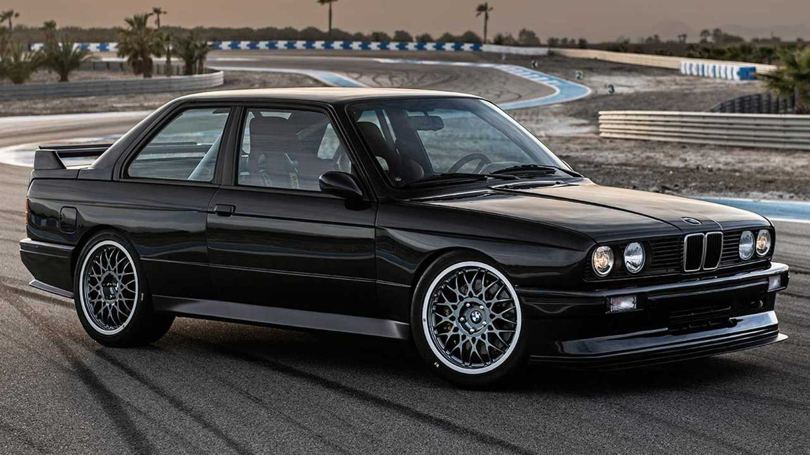

GRAN TURISMOBMW M3 E30 Evo (1990)
 Nacido en los circuitos y homologado para la calle. El M3 E30 representa una de las épocas más gloriosas de la división BMW M. Esta unidad de edición especial cuenta con el motor de cuatro cilindros acoplado a una caja de cambios deportiva con la primera marcha hacia atrás. Actualmente se encuentra apartado, esperando su entrega al próximo custodio de su legado. |